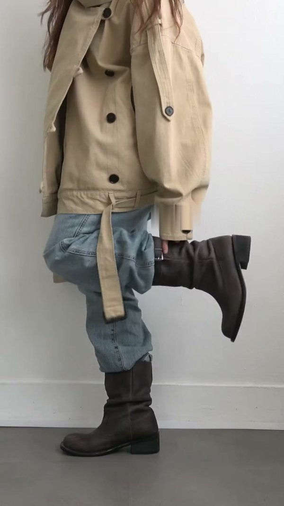
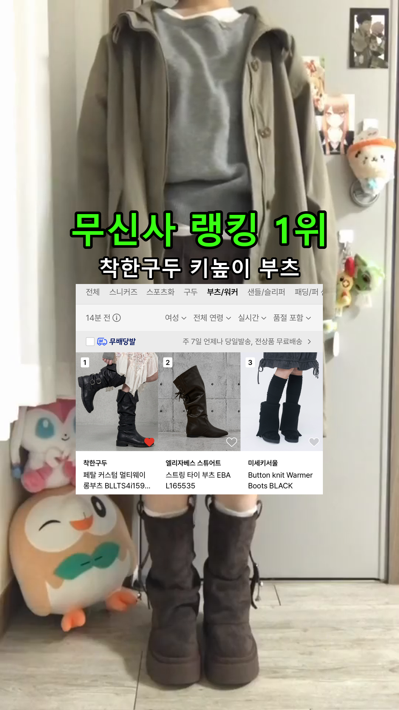
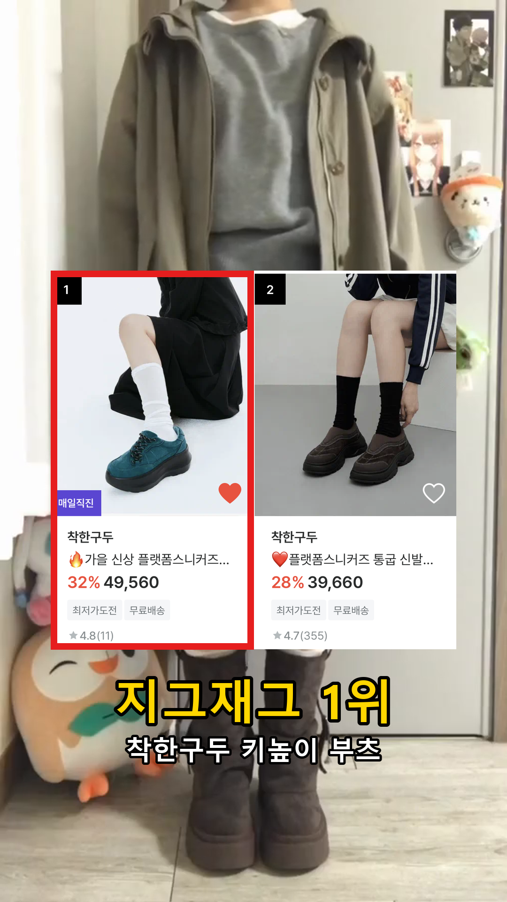
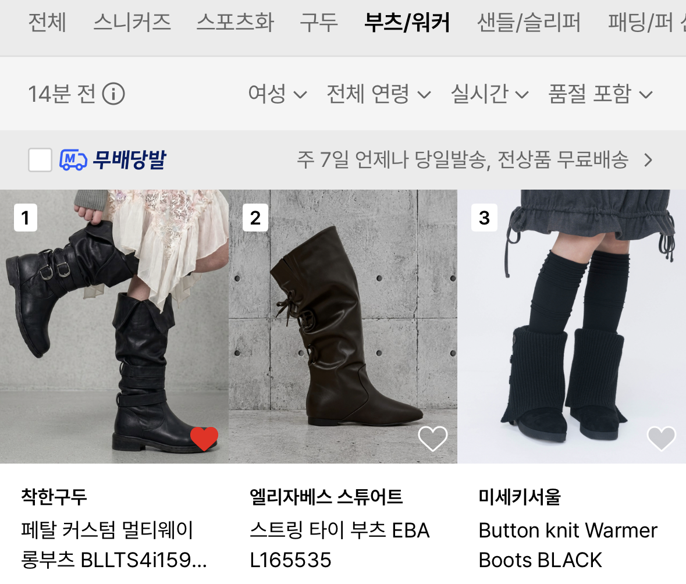

착한구두 풀문 촬영 가이드
아래 5장면으로, 20초 안팎이면 돼요. 첫 장면 바로 다음에 굽 집기 + 단면이 나오는 게 가장 중요해요.
촬영 제품
 풀문키높이 퍼안감 방한 부츠 · 굽 7cm
풀문키높이 퍼안감 방한 부츠 · 굽 7cm본인 계정에서 반응 좋았던 시작 그대로
정해진 한 가지 모양은 없어요. 평소 본인 계정에서 반응이 좋았던 시작 방식 그대로 시작해 주세요. 본인 영상 중 참고할 장면은 개인 가이드에서 따로 보내드려요.
기본 예시로, 아래처럼 허리 아래만 나오게 한쪽은 부츠·한쪽은 양말로 서 있는 시작도 좋아요. (예시 중 하나일 뿐이에요.)
키 자리에는 ‘평소 키 → 평소 키 + 7’을 적어 주세요. 예: 158 → 165cm. 키 숫자는 이 첫 장면에만 넣어 주세요. 글꼴·색·크기는 자유예요.
손으로 굽을 집고, 단면 보여주기
이 장면은 꼭 넣어 주세요. 첫 장면 바로 다음에 나와야 해요.
굽 집기신발을 들고 손가락으로 굽을 집어 가리켜 주세요. 가까이서 찍어 주세요.
단면 보여주기이어서 잘린 면(단면)이 화면 가운데 크게 보이게 보여 주세요.
화면 글자 예시서울 마포구 양화로 125 5층 착한구두
받는 분 콘텐츠기획 · 010-5595-5342
단면 샘플이 촬영 날까지 안 오면 아래 단면 사진을 2초 넣어 주세요.

앞에서, 옆에서 보여 주세요


앞에서 1초두 발 다 신고 정면에서 허리 아래만. 신은 뒤 비율이 보이면 돼요.
옆에서 1초다시 한쪽 부츠·한쪽 양말로 나란히 서서, 폰을 무릎 높이에 낮게 두고 옆에서. 발뒤꿈치가 올라간 높이가 바로 보여요. 키 숫자는 첫 장면에만 있어요.
이어서 랭킹 사진 1장2초
그 위에 담당자가 알려드린 랭킹 사진 1장(무신사 또는 지그재그 중 하나)을 예시처럼 크게 2초 넣어 주세요. 위치는 첫 장면이나 뒤쪽 어디든 괜찮아요. 로고 대신 ‘착한구두 키높이 부츠’ 글자를 적어 주세요.





한 벌로, 부츠 중심 하반신 컷 3개
옷은 한 벌이면 돼요. 부츠가 잘 보이는 옷(치마·짧은 바지·바지를 부츠 안에 넣은 차림)으로, 부츠 중심 하반신만 나오게 3초씩 찍어 주세요.
앞에서 3초정면, 부츠 끝까지 나오게.
옆에서 3초굽과 밑창이 보이게.
거울로 3초전신 거울에 비친 허리 아래, 부츠가 가운데. 걷는 모습도 좋아요.
다른 옷으로 더 보여 주고 싶다면 착장마다 1~3초로 빠르게 넘겨 주세요.
댓글 안내로 끝내 주세요
부츠를 신고 서 있는 모습을 3초 찍어 주세요.
얼굴이 나와도 돼요.
링크 보내드릴게요
○○는 담당자에게 받은 댓글 키워드로 바꿔 주세요. 글꼴·색은 자유예요.
이것만 빼 주세요
멀리서 전신으로 찍기 — 폰을 무릎 높이에 가까이 두세요. 멀면 굽 높이 차이가 안 보여요.
언박싱 장면 넣기 — 상자 열기·포장 뜯기는 빼 주세요. 처음부터 부츠를 신은 모습으로 시작해요.
가방 들고 찍기 — 가방이 부츠를 가려요. 빈손으로, 다른 신발도 화면 밖에 둬 주세요.
본품 자르기 — 보내드린 본품은 자르거나 안창을 빼지 마세요.
다른 신발 브랜드 이름·로고·상자, 유명인 이름, 저작권 음원은 넣지 않아요. 음악은 별도 안내가 없다면 안 넣어도 돼요.
촬영 전 준비
준비물 · 촬영 전 연락
- 색상·사이즈를 보내 주세요.
- 폰 받침대나 삼각대, 양말, 부츠가 잘 보이는 코디 한 벌을 준비해 주세요.
- 어떻게 찍을지 글 몇 줄이나 말로 먼저 보내 주세요. 본인 기획안 양식도 괜찮아요. 확인 답변을 받은 뒤 촬영해 주세요.
- 초안 전달 날짜·게시 날짜·댓글 키워드도 확인해 주세요.
연락은 이 가이드를 받은 메일이나 대화방으로 주세요.